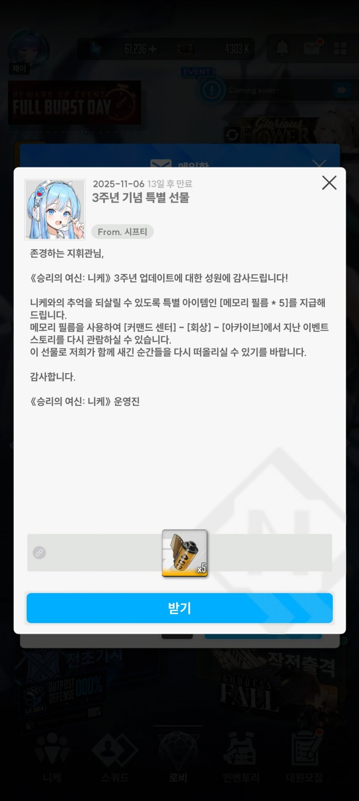
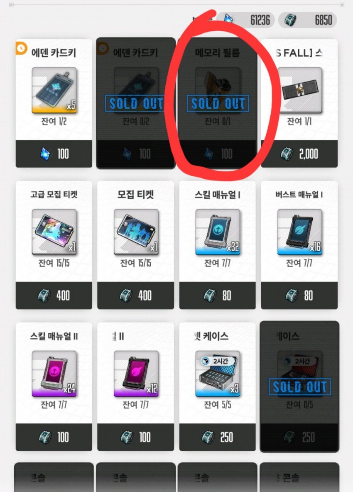
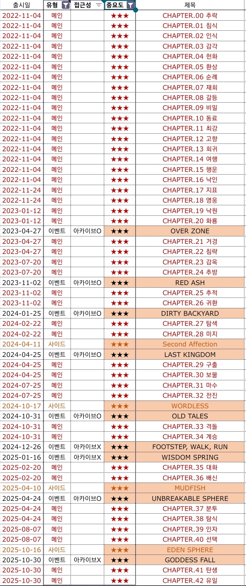

이번 이벤스는 지금으로부터 2주가 지나면 더이상 볼 수 없다
나중에 아카이브에 들어오는 것 기다리려면 6개월을 기다려야 한다
문제는 이번 이벤스토리는 너무나 많은 스포일러를 담고 있으며 수많은 빌드업의 결과물이기에 그냥 보면 니생 손해본다
다행인점이라면 메인스토리는 스토리모드가 출시되었고 기존 이벤트 스토리는 3주년 기념 선물로 필름 5개를 주었다
여기에 추가로 이번 이벤트 스토리를 스킵해서 보상만 모두 받고 이벤트 상점의 이벤트필름까지 구매한다면 필름 총 7개를 사용할 수 있다

따라서
1) 스토리모드의 매인스토리 모두 (1~42챕터)
2) 이벤트 스토리 7개
3) 사이드 스토리 모두 (4개)
적절한 순사로 감상한 뒤 이번 이벤트 스토리를 감상하면 니생 이득 볼 수 있다 (이걸 안 본 눈으로 한번에 정주행 할 수 있다는게 오히려 부러을 지경이다)
스토리 보는 순서

본인이 중요도가 높다고 생각한 스토리 목록이다
여기에 2023-12-18에 출시된 NEW YEAR, NEW SWORD 정도를 추가 감상하면 충분하다
2024년 말, 2025년 초에 출시한 FOOTSTEP, WALK, RUN와 WISDOM SPRING은 아쉽게도 아직 아카이브에 들어오지 않았다.. 보통 1년정도 지나야 아카이브에 들어오는데 오히려 그 이후에 출시 된 UNBREAKABLE SPHERE는 2.5주년 스토리라서 아키이브에 빨리 들어왔다
다행인 점이라면 FOOTSTEP, WALK, RUN와 WISDOM SPRING 모두 급하게 볼 이유까지는 없으니 넘어가거나 너무 궁금하면 유튜브에 찾아보자
(전체목록)
https://docs.google.com/spreadsheets/d/1RfUML43ek5Vcrf3DPUGsueBF1ytCBb90InB4zKJr3FA/edit?usp=drivesdk
보는 순서는 대충 출시 순서를 따르자
하지만 예외가 조금 있다
추천 순서는 다음과 같다
메인스 1~20
(메인스 진행 중 서브퀘스트 '랩칠리언' 관련)
이벤스 OVERZONE (0.5주년)
(이벤스 OVERZONE 중 미니게임)
메인스 21~24
이벤스 RED ASH (1주년)
메인스 25~26
이벤스 NEW YEAR, NEW SWORD (24신년)
사이드 SECOND AFFECTION
이벤스 LAST KINGDOM (1.5주년)
사이드 WORDLESS
이벤스 DIRTY BACKYARD
메인스 27~30
이벤스 OLD TALES (2주년)
메인스 31~34
이벤스 FOOT STEP, WALK, RUN (25신년)
이벤스 WISDOM SPRING
메인스 35~36
사이드 MUDFISH
이벤스 UNBREAKABLE SPHERE (2.5주년)
메인스 37~40
사이드 EDEN SPHERE
메인스 41~42
이벤스 GODDESS FALL (3주년, 현재 진행 중)
빨간색으로 표시한 스토리가 총 7개이므로 필름을 여기에 쓰면 된다 근데 DIRTY BACKYARD는 평가가 안 좋기도 하고 중요도가 상대적으로 떨어지니 생략해도 괜찮다
메인스 41~42도 나중에 봐도 무방하다
솔직히 이거 2주동안 다 보는거 개빡세다 아마 일하는 사람은 거의 어려울 거 같고 나 시간 좀 있다 하는 사람이라면 차례대로 정주행해서 니케 스토리의 재미에 빠져보도록 하자
시간이 부족한 사람은 이렇게만 보자
메인스 1~20
(메인스 진행 중 서브퀘스트 '랩칠리언' 관련)
이벤스 OVERZONE (0.5주년)
(이벤스 OVERZONE 중 미니게임)
메인스 21~24
이벤스 RED ASH (1주년)
메인스 25~26
이벤스 NEW YEAR, NEW SWORD (24신년)
사이드 SECOND AFFECTION
이벤스 LAST KINGDOM (1.5주년)
이벤스 OLD TALES (2주년)
사이드 EDEN SPHERE
이벤스 GODDESS FALL (3주년, 현재 진행 중)
필름 5개면 충분
NEW YEAR, NEW SWORD 정도는 생략해도 될 것 같다
바빠도 메인스 26챕터까지는 보도록하자
그게 어렵다면 3주년 이벤스는 다음기회에 보거나 나중에 유튜브로 보는 것을 추천하겠다